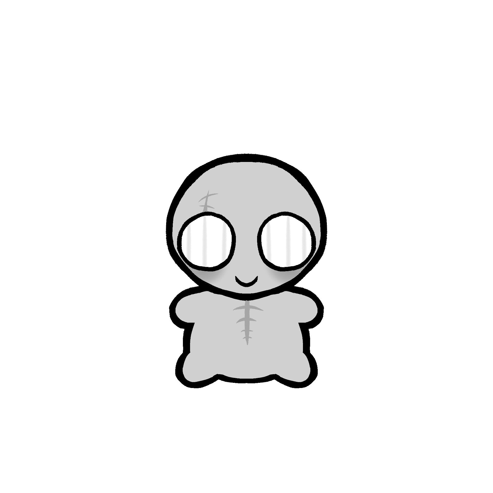
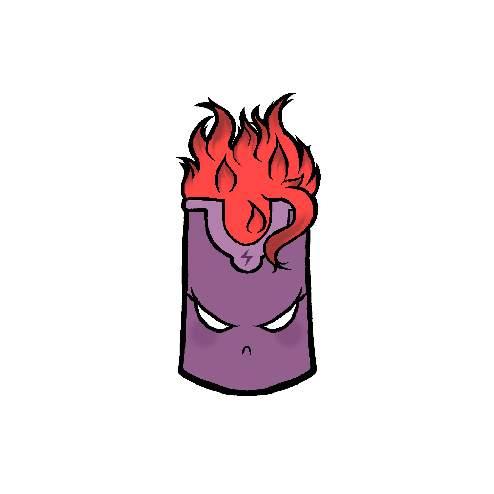

Others
 
A mother and daughter. Lineth is Liberty's crown! Lineth took Liberty under her care when she found the little girl alone with no one to care for her. Little Liberty wears clothes similar as the Statue of Liberty, and Lineth transformed into her crown to complete the outfit! Liberty fights in battle with Cheesy in his gang, she uses an axe as her primary weapon!